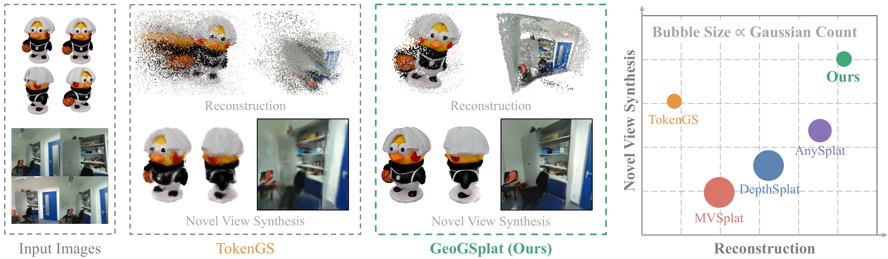
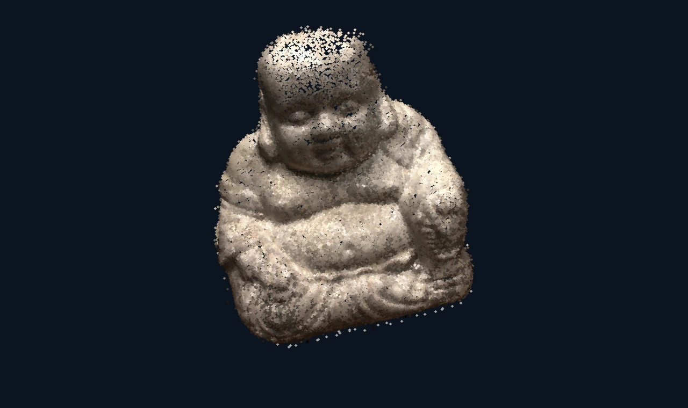
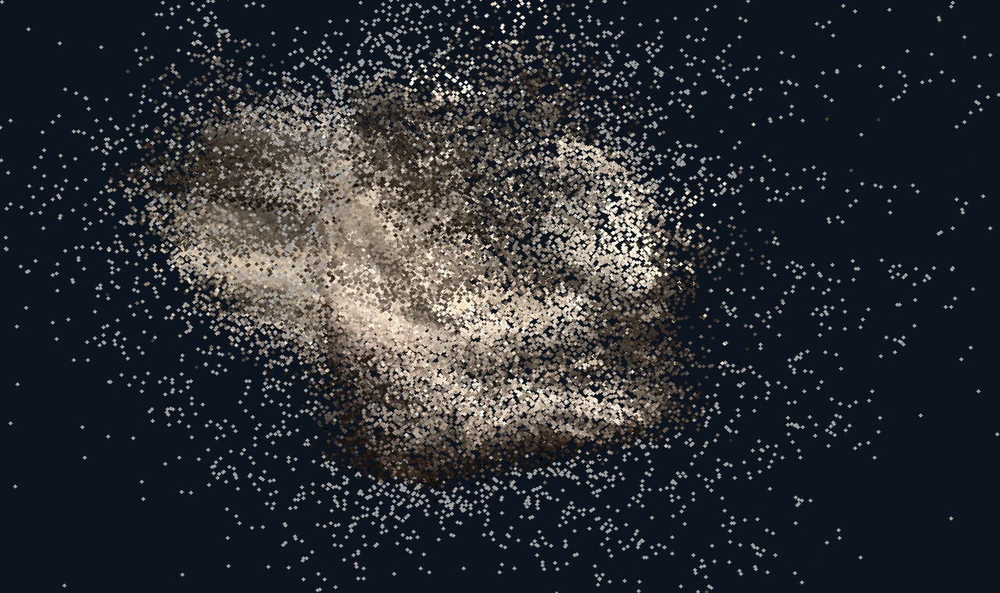
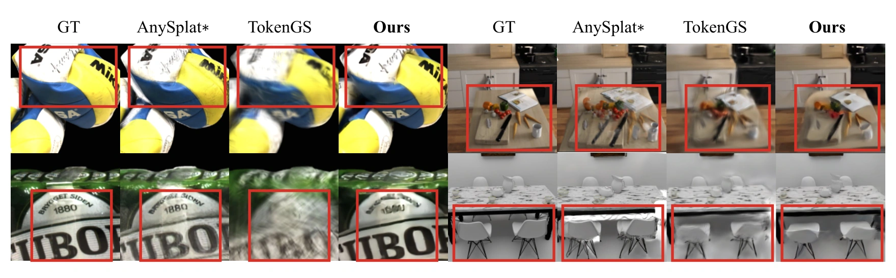
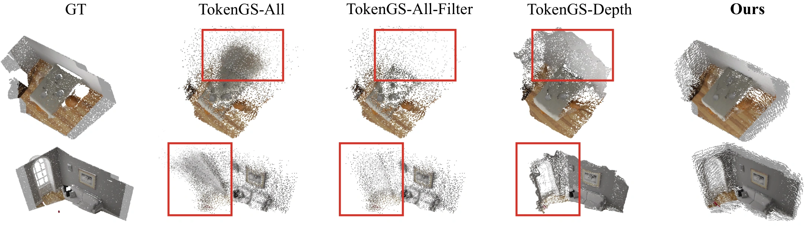
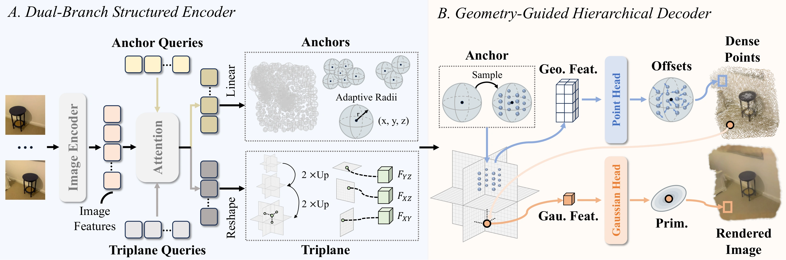
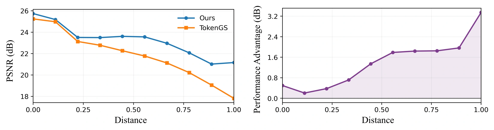

Dual-Branch Structured Encoder
Image and Plücker ray embeddings go through a Vision Transformer. Shared attention turns image features into Anchors (learnable centers and radii) and a Triplane of fine-grained scene features.
FEED-FORWARD 3D RECONSTRUCTION & NOVEL VIEW SYNTHESIS
* Equal contribution · ‡ Corresponding author

FIGURE 1 / OVERVIEW GeoGSplat combines Anchor and Triplane representations for 3D reconstruction and novel view synthesis. Larger bubbles indicate more Gaussians.
Original figure ↗OVERVIEW
Feed-forward Gaussian Splatting enables efficient novel view synthesis. Pixel-aligned prediction makes the primitive count grow with image resolution and view count, introducing redundancy. Non-pixel-aligned methods predict a fixed number of Gaussians, but without explicit geometric constraints, misplaced centers can cause rendering artifacts under large viewpoint changes.
GeoGSplat incorporates geometric priors into non-pixel-aligned prediction. A dual-branch structured encoder constructs Anchors and Triplane to capture coarse 3D structure and fine-grained scene features. A geometry-guided hierarchical decoder progressively predicts dense 3D points and Gaussian primitives. Experiments on DTU and NRGBD show improvements in novel view synthesis and 3D reconstruction, with a larger advantage over TokenGS as target viewpoints move farther from the input cameras.
Dual-branch encoder and hierarchical decoderNOVEL VIEW SYNTHESIS
Gaussian rendering from the same viewpoint.
Rotate either view to compare both methods.
Select a scene to update the comparison below.
Both methods render 65,536 Gaussians per frame at 320 × 320 from the same cameras.
3D RECONSTRUCTION
GeoGSplat and original TokenGS Gaussian centers.
Both models use the same context views.
Select a scene to update the comparison below.

GeoGSplat Loading geometry…
TokenGS Loading geometry…All 65,536 Gaussian centers per method, in a shared coordinate system.
QUALITATIVE ANALYSIS
Figure 4: novel views with four inputs.
Figure 6: recovered geometry on NRGBD.

FIGURE 4 / NOVEL VIEW SYNTHESIS Qualitative novel view synthesis with four input views. Columns show ground truth, AnySplat*, TokenGS, and GeoGSplat from left to right. Red boxes highlight blurred details in TokenGS and shifted or duplicated structures in AnySplat*. TokenGS blurs object markings on DTU and textures on NRGBD; AnySplat* is sharper but duplicates or distorts structures due to inconsistent depth across views. GeoGSplat preserves finer details and more accurate scene structures in these regions. AnySplat* uses ground-truth poses.
Original Figure 4 ↗
FIGURE 6 / GEOMETRY 3D reconstruction on NRGBD. From left to right: ground truth, TokenGS Gaussian centers, opacity-filtered TokenGS centers, points unprojected from depth rendered by TokenGS, and GeoGSplat dense points. TokenGS contains substantial geometric outliers that remain after opacity filtering, while its depth-based reconstruction is also displaced from the ground truth. GeoGSplat predicts points closer to the ground-truth geometry and provides more complete scene coverage.
Original Figure 6 ↗METHOD

Image and Plücker ray embeddings go through a Vision Transformer. Shared attention turns image features into Anchors (learnable centers and radii) and a Triplane of fine-grained scene features.
Reference points start inside each Anchor region. Triplane features and cross-attention predict offsets that move them into dense 3D points. Training uses Chamfer distance to align Anchor centers and dense points with the ground truth.
The decoder queries the Triplane at these points and predicts Gaussian parameters with a shared MLP head. 4,096 Anchors × 16 points gives 65,536 Gaussians, independent of input-view count and image resolution.
EXPERIMENTS
Novel view synthesis and 3D reconstruction.
Four input views, as in the main tables.
| Method | PSNR ↑ | SSIM ↑ | LPIPS ↓ | CD ↓ | Gaussians |
|---|
AnySplat* uses ground-truth poses. CD is the average of Pred→GT and GT→Pred Chamfer distances in a shared normalized coordinate system. GeoGSplat is evaluated on dense points; other methods use Gaussian centers. The appendix reports nearly identical GeoGSplat results using Gaussian centers.
VIEWPOINT-DISTANCE ANALYSIS
GeoGSplat and TokenGS are compared along the same target-view trajectories with fixed context views. Performance is similar near the context cameras, and GeoGSplat’s PSNR advantage grows with target-context distance.
Target-context distance is the distance from the target camera center to the nearest context camera center. PSNR is computed on target pixels visible in at least one context view.

PREPRINT
The paper is available on arXiv.
If you find this work useful, please cite:
@misc{wang2026geogsplat,
title = {GeoGSplat: Geometry-Grounded
Non-Pixel-Aligned Gaussian Splatting},
author = {Jiale Wang and Chen Zhao and Haoyang Zhang
and Yanhao Wu and Fei He and Yanhu Shan
and Rui Wu and Wei Ke and Tong Zhang},
year = {2026},
eprint = {2610.36760},
archivePrefix = {arXiv},
primaryClass = {cs.CV},
url = {https://arxiv.org/abs/2610.36760}
}